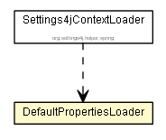

org.settings4j.helper.web
Class DefaultPropertiesLoader

java.lang.Object
 org.settings4j.helper.web.DefaultPropertiesLoader
org.settings4j.helper.web.DefaultPropertiesLoader
public class DefaultPropertiesLoader
- extends Object
Implementation which loads Default Properties from web.xml Init-Paramters and adds a Property connector to
Settings4j.
See Example DefaultPropertiesLoaderListener.
- Author:
- brabenetz
|
Field Summary |
static String |
CONNECTOR_NAME
The Name of the Connector which will be added to the Settings4j Config. |
static String |
DEFAULT_PROPERTIES
The Init-Parameter Name from the web.xml from where the default properties can be used. |
|
Method Summary |
void |
initDefaultProperties(javax.servlet.ServletContext servletContext)
If the InitParameter "settings4jDefaultProperties" exists in the given ServletContext, then a Connector
will be added to Settings4j. |
| Methods inherited from class java.lang.Object |
clone, equals, finalize, getClass, hashCode, notify, notifyAll, toString, wait, wait, wait |
CONNECTOR_NAME
public static final String CONNECTOR_NAME
- The Name of the Connector which will be added to the Settings4j Config.
- See Also:
- Constant Field Values
DEFAULT_PROPERTIES
public static final String DEFAULT_PROPERTIES
- The Init-Parameter Name from the web.xml from where the default properties can be used.
- See Also:
- Constant Field Values
DefaultPropertiesLoader
public DefaultPropertiesLoader()
initDefaultProperties
public void initDefaultProperties(javax.servlet.ServletContext servletContext)
- If the InitParameter "settings4jDefaultProperties" exists in the given
ServletContext, then a Connector
will be added to Settings4j.
- Parameters:
servletContext - The ServletContext where the InitParameters are configured.
Copyright © 2008-2013. All Rights Reserved.